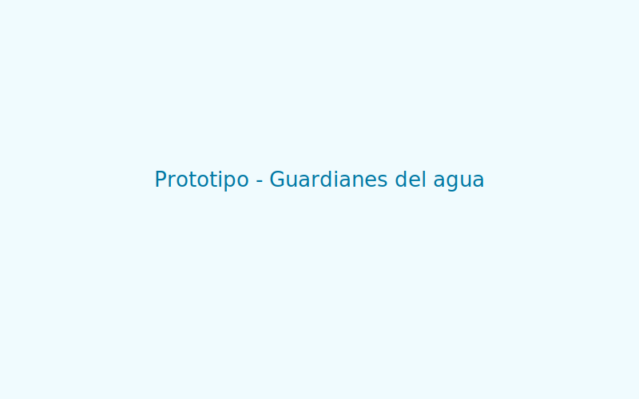

Problema
En la escuela se desperdicia agua al dejar llaves abiertas y usar riego ineficiente. Buscamos reducir ese desperdicio.
Propósito
Promover el uso responsable del agua mediante una página educativa con consejos, videos y retos.
Consejos para ahorrar agua
- Cierra la llave mientras te enjabonas las manos.
- Repara fugas y reporta llaves que gotean.
- Utiliza baldes en vez de manguera para actividades de limpieza.
- Riega en horarios con menos evaporación (temprano en la mañana).
Videos informativos
Videos en español seleccionados para reforzar el aprendizaje:
Ir a El ciclo del agua para niños - Estados del agua
Ir a Cómo cuidar el agua - Estados del agua
Actividad interactiva
Explora la simulación para comprender los estados y usos del agua:
Prototipo final
El prototipo final de la página web 'Guardianes del agua' incluye secciones informativas, videos y un reto interactivo. Los materiales utilizados fueron herramientas digitales gratuitas. La página se presentó en clase y recibió comentarios positivos por su utilidad educativa.
Reflexión
Los estudiantes consolidaron habilidades de investigación y colaboración, y desarrollaron conciencia sobre la importancia del agua.